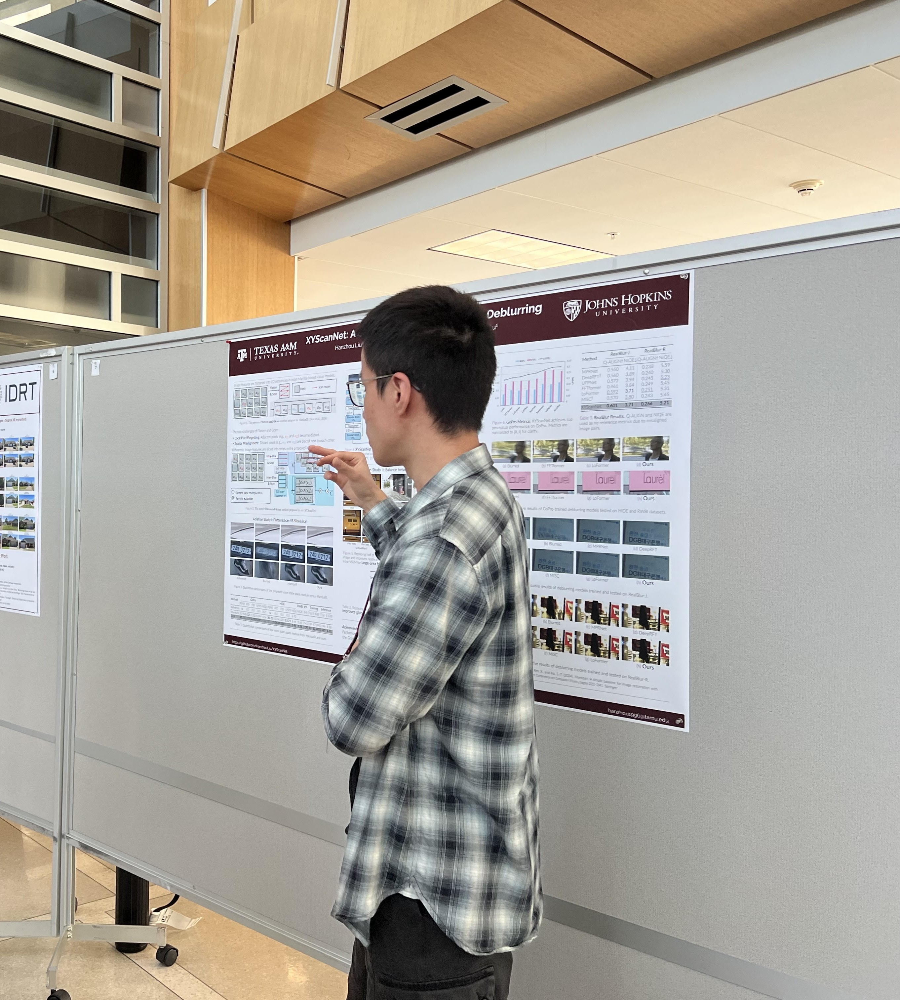
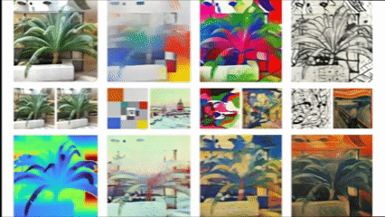
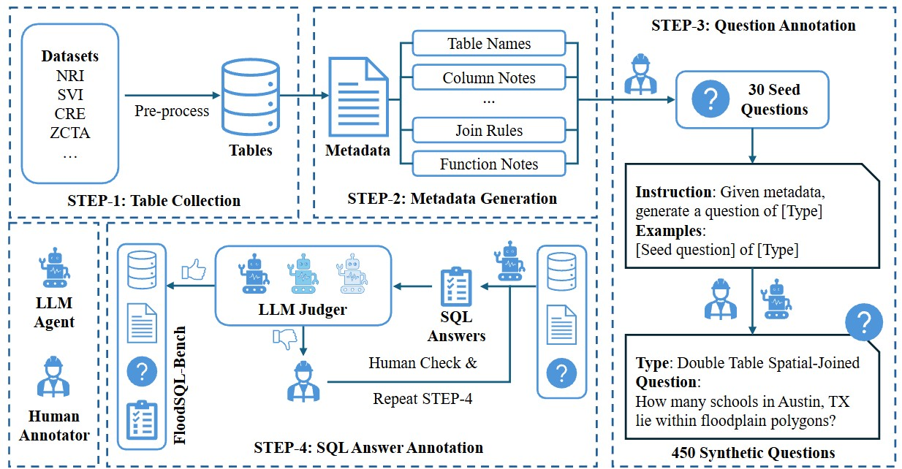
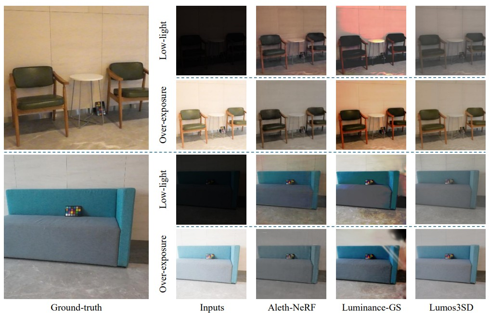
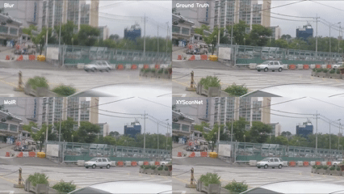
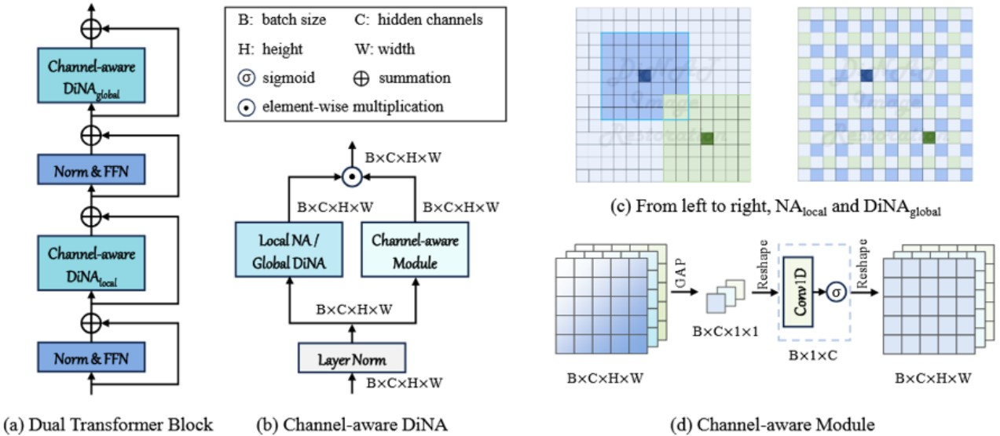
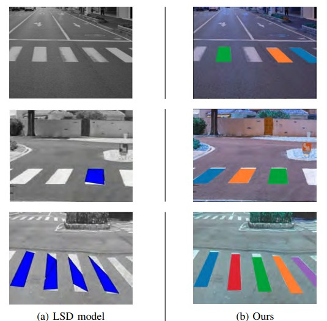

Hanzhou Liu

I am a 6th-year Ph.D. student in Computer Engineering at Texas A&M University.
My research interests and knowledge scope include:
- Computer vision, including 3D vision and generation
- Multimodal models, particularly for video generation and visual understanding
- LLM post-training and tool-augmented reasoning
I am actively seeking full-time industry positions for 2027, and I am also very open to research internships and postdoctoral opportunities. If you are aware of any relevant openings, please feel free to reach out to me at heyhanzhou@gmail.com.
- [05/2026] 🎉 I am joining Amazon Store as an applied scientist intern, working on tool-augmented LLM post-training. New
- [01/2026] 🎉 Our paper Stylos on feed-forward 3D stylization is accepted by ICLR 2026 (Scores 8-8-6-6, Top 1.3%).
- [08/2025] 🎉 I am joining the Urban Resilience Lab as a research assistant, working on LLM retrieval and reasoning.
- [04/2025] 🎉 XYScanNet has been accepted by NTIRE CVPR 2025.
- [07/2024] 🎉 Mamba4Rec, invited talk at Uber.
- [02/2024] 🎉 Mamba4Rec has been selected for 🏆 Best Paper Award at KDD'24 RelKD Workshop.
Applied Scientist Intern
Amazon Store, Seattle
May 2026 – Aug 2026
Advised by Rui Song
- Built the organization’s first tool-augmented reasoning system for seller-enforcement decisions, using a two-stage search process to retrieve supporting evidence for decision verification and rationale generation.
- Developed an LLM post-training pipeline for seller-enforcement reasoning, combining synthetic reasoning traces, supervised fine-tuning, and GRPO-based reinforcement learning to improve rationale quality.
Research Assistant
Urban Resilience Lab, College Station
Aug 2025 – Jan 2026
Advised by Ali Mostafavi
- Developed FloodSQL-Bench, the first Text-to-SQL benchmark for flood-risk analytics, comprising 443 question–SQL pairs across six difficulty levels and 10 tables with key-based, spatial, and hybrid joins.
- Designed a metadata-driven, multi-granularity RAG pipeline with table- and column-level retrieval, and evaluated 20+ proprietary and open-source LLMs on multi-table geospatial reasoning.
ICLR 2026 (8-8-6-6)

Stylos couples VGGT with Gaussian Splatting for cross-view style transfer,
introducing a voxel-based style loss to ensure multi-view consistency.
AAAI-SS 2026

FloodSQL-Bench is the first Text-to-SQL benchmark for flood-risk analytics, comprising 443 question–SQL pairs across six difficulty levels and 10 tables with spatial/hybrid joins. Evaluates 20+ LLMs with a metadata-driven, multi-granularity RAG pipeline.
arXiv

Lumos3D introduces a pose-free single-forward framework for 3D low-light scene restoration using a cross-illumination distillation scheme and a specialized Lumos loss, restoring structure and illumination without scene-specific optimization.
NTIRE CVPR 2025

XYScanNet maintains competitive distortion metrics and significantly improves perceptual performance.
Experimental results show that XYScanNet enhances KID by 17% compared to the nearest competitor.
IRAJ 2025

DiNAT-IR explores Dilated Neighborhood Attention (DiNA) for image restoration. By introducing a channel-aware module to complement local attention, DiNAT-IR integrates global context without sacrificing pixel-level precision, achieving competitive results across diverse benchmarks.
ICIVC 2022

Proposes a robust crosswalk stripe detection model based on gradient similarity tags to effectively identify pedestrian crossings under challenging outdoor lighting conditions, complex shadows, and perspective distortions.
- 2021.08 - 2027, Texas A&M University, PhD in Computer Engineering.
- 2019.08 - 2021.06, Texas A&M University, MS in Computer Engineering.
- 2014.08 - 2018.06, Jilin University, BS in Electrical Engineering.
- Reviewer: NeurIPS 2026, IEEE Transactions on Consumer Electronics (TCE), CVPR 2025 (NTIRE Workshop), WACV 2024, CIKM 2024